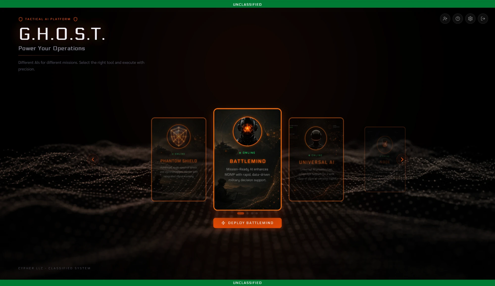
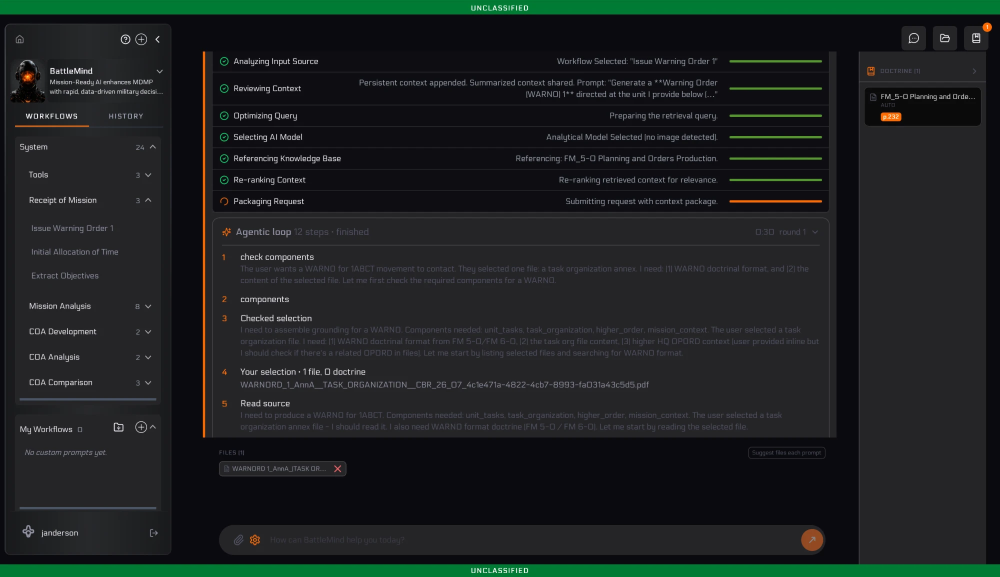
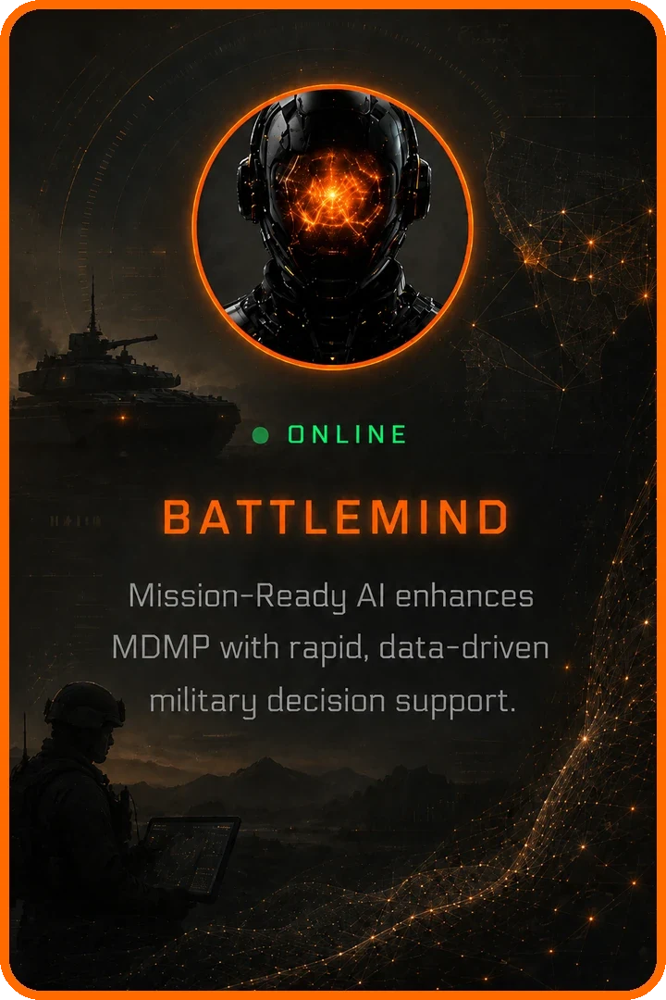
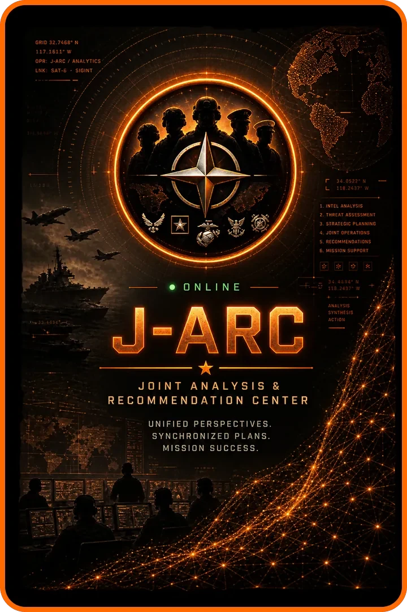
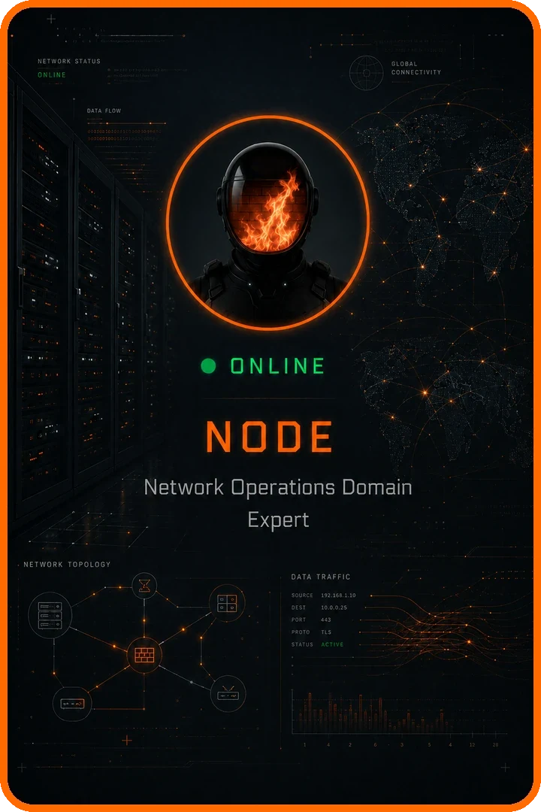
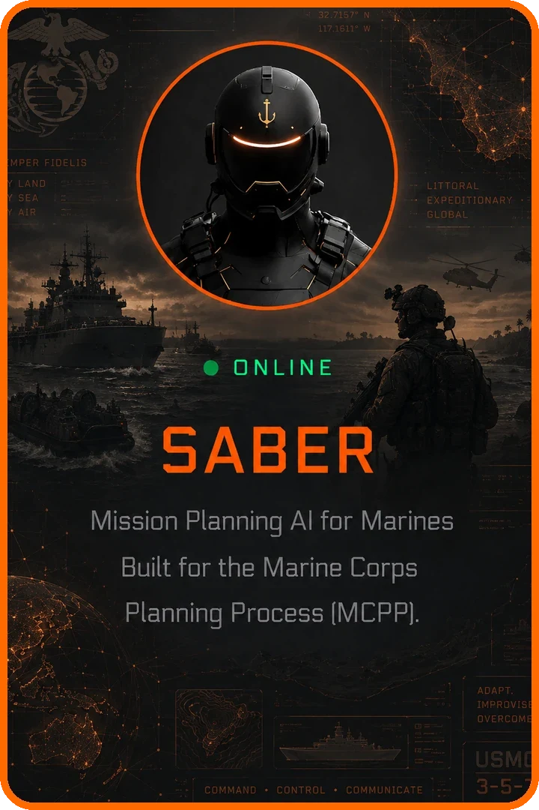
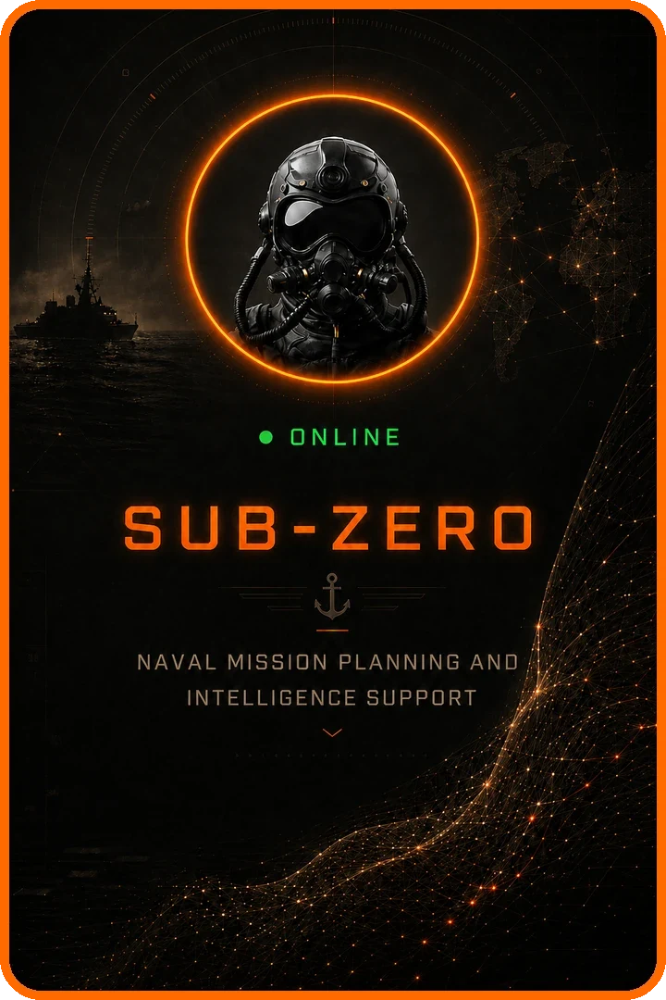
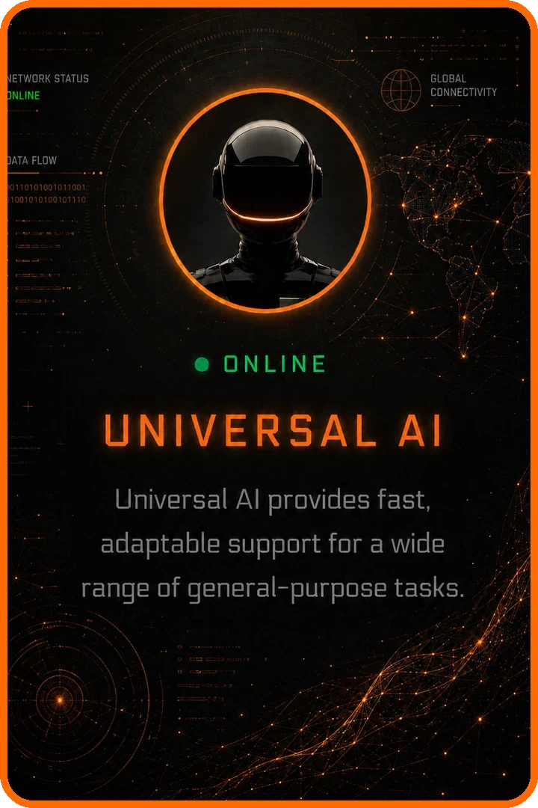

Choose the agent for the job.
Each agent is built for one mission area. Pick one from the roster, or let G.H.O.S.T. Mode choose the team for you.
G.H.O.S.T. gives your team specialist AI agents that run on your own hardware, in a private cloud, or fully disconnected. Your documents and your data stay where you put them.
One platform. Any mission. Anywhere.

Most AI tools are a chat window wrapped around a general model. In G.H.O.S.T. each agent knows one job, such as planning an operation, administering a contract or diagnosing a network. It works from your own files and doctrine, shows where every answer came from, and runs the steps for you.
Standing up AI takes specialists and months.
Pick an agent and start. They arrive ready, and Cypher helps install the platform.
Chat tools make everyone write careful prompts.
One-click workflows run the steps for you. No prompt engineering.
Sensitive data cannot leave the building.
It runs on your hardware or fully disconnected, with an optional design that never calls home.



Each agent is built for one mission area. Pick one from the roster, or let G.H.O.S.T. Mode choose the team for you.
State the task in plain language and attach your files. The plan is shown first, and nothing runs until a person approves it.
Every step shows on screen: what it searched, which documents it read, and which model it used.
Results arrive ranked, with evidence, assumptions and gaps, ready for a person to review and approve.
Real G.H.O.S.T. screens. Names and files shown are sample data.
Agents work from the doctrine, regulations and procedures of their field, and every claim cites the document it came from. Cypher can build new agents for your mission.






Seven capabilities sit on top of the agents. They are how G.H.O.S.T. plans, checks its own work, remembers, hunts, and decides where each task should run. Pick one to see how it works.
Real problems cross domains, and single-agent AI makes a staff break the problem into pieces and stitch the answers together by hand. The AI Council convenes several specialist agents on the same problem. State your tasking and the platform recommends a chair and specialist seats, each with its own persona, workflows and document corpus. The council deliberates in front of the operator, returns one verdict, then stands by for the next tasking.
Each seat can run a different underlying model, frontier or local, so the deliberation carries genuinely different perspectives, not one model agreeing with itself five times.
Convene once, then keep tasking it. The council carries context forward, so the team you assembled yesterday takes today's follow-on tasking without re-briefing.
The operator keeps the decision. Each seat's reasoning is traceable and dissent is recorded, not hidden.
Air-gapped on-prem, cloud-connected or hybrid: the same council, built from the base agents you already field.
One chair, many perspectives, one accountable verdict.
Every plan survives until it meets the other side. M.A.C.S. lets you meet the other side early, on your own terms. Stand up a friendly agent that knows your unit: your doctrine, your OPORD, your constraints. Stand up the adversary and arm it with everything you hold on them. Then let them fight. Every hole the opposition finds is one you close before the real world finds it. The same engine works in the boardroom: your company on one side, your three biggest competitors on the other.
Not a devil's advocate: an adversary. It argues from the tactics manuals, intelligence and competitor context you load, so its moves are theirs.
One control sets how many rounds the sides trade. Dial it down for a fast pressure test before a decision brief, or up for a sustained campaign.
Pit your unit against a foreign adversary, or your company against the competitors most likely to answer your next move.
A simulation is an assessment, not an order. Every finding traces to the round and the material that produced it.
A red team on retainer.
Most AI answers from one pass at your files and writes confidently over whatever it did not find. The Agentic Loop works a tasking the way a trained analyst would: it plans its own lines of inquiry, searches your corpus and your trusted sources of truth round after round, opens and reads the passages that matter, checks what it still lacks, and only then assembles the product, delivered with its sources cited and its assumptions declared.
Every round is on screen as it happens: the queries it chose, the files and reference pages it hit, the relevance score of each, and the passages it opened.
Products arrive with a grounded-on list of the source documents and authoritative references behind them, so a reviewer can walk any line back to its page.
What the corpus does not contain is declared as an assumption or gap for your people to resolve, not quietly invented.
Air-gapped on-prem, cloud-connected or hybrid, built from the agents you already field.
How a G.H.O.S.T. agent earns its answer.
Local-only AI gives up the hardest reasoning; frontier-only AI gives up control of the data and of the bill. The Smart Router scores every request for reasoning depth before anything moves, applies your policy and spend window, and sends the task to the model that fits. When frontier is selected, sensitive values are tokenized at the boundary and rehydrated on return: the reasoning leaves, the data does not.
Nobody picks a model. The classifier runs on every request and the proxy makes the call, so routine work is absorbed locally and frontier reasoning is kept for problems that need it.
Sanitization is not deletion. Names, dates of birth, record numbers and party names become tokens at the boundary and are restored from a local vault on return.
Frontier use is bounded by an envelope you set. Past it, the router falls back to local tiers until the window resets: the work continues, the invoice does not climb.
The router decides where reasoning happens, never what the answer should be. Routing decisions, policy trips and sanitization steps are visible to the operator.
The routing layer beneath the roster. Every agent inherits it.
Your files answer what you know; the Authority Library answers what the rules are. Neither answers what you have already learned. MEMORY does. As G.H.O.S.T. works, it captures corrections, decisions and their rationale, conventions and constraints, and users can pin a fact themselves with "remember this". Personal memory files itself and stays yours to edit. Nothing enters Team Memory silently: a curator promotes every entry. The pinned core rides in every session at a fixed, capped cost; what retires stays searchable.
RAG holds what you gave it; MEMORY holds what working together produced: the correction that ended a bad habit, the decision and why it was made, the convention nobody wrote down.
G.H.O.S.T. and users can only nominate a shared entry; a named curator promotes it. Every entry carries its provenance: who, when and the session it came from.
Personal memory is fully editable, and any session can run with memory off. Team memory is off by default and enabled per team.
Task instructions, the Authority Library and System Files take precedence. When a memory drifts from doctrine or policy, G.H.O.S.T. raises the conflict for a human.
Institutional recall. No session starts from zero.
Detection waits for a rule to fire, so it only finds what somebody already knew to look for. HUNTER goes looking instead. Point it at a log repository, a SIEM export, a database or a published API; it maps the terrain deterministically, takes its mission in plain language, then sweeps every record with detectors that cost nothing to run and shows a model only the handful of candidates that survive. Full coverage is what makes it cheap, and cheap is what lets it run around the clock.
Deterministic detectors read every record, so the assurance report states exactly which detector examined what, including hypotheses eliminated and work deferred.
Triage weighs every candidate against the terrain baseline and reports the rejections alongside the escalations, with the reasoning that decided each.
A confirmation becomes a hypothesis and runs down in its own sub-hunt, from foothold to traversal to staging, always against the intent you set.
HUNTER detects, correlates and recommends. Analysts and incident commanders keep the decision; every finding carries its detector, triage reasoning and evidence.
Maps the terrain, works the mission and never stops looking.
Real taskings cross specialties: a warning order carries foreign-language threat reporting and another service's fires; a protest response turns on acquisition procedure, regulatory reference and cloud architecture at once. Nobody should have to know which agent to open first. In G.H.O.S.T. Mode the user states the task in plain language and attaches what they have. G.H.O.S.T. detects the mission domain, assembles the specialist team, binds each agent to the Automated Workflow that fits its part of the job and runs them in sequence, returning one cited deliverable with an explicit assumptions-and-gaps list.
When a step needs an input the request never supplied, execution pauses and asks one targeted question. Context is held in place, so answering resumes the run rather than restarting it.
Any successful run can be saved as a named Automated Workflow with its steps, triggers and parameters, and shared to the unit or office catalog.
Commanders, contracting officers and counsel remain the sole authorities. Every product is staged for human review with citations, assumptions, gaps and flagged conflicts.
Air-gapped on-prem, cloud-connected or hybrid, orchestrating the base agents and workflows you already field.
One request in, one reviewed product out.
Contracting and mission planning both bury skilled people in drafting and reconciling. G.H.O.S.T. does the drafting, cites where each line came from, and leaves the decision with the person.
Federal acquisition teams have to award faster and document more with a shrinking workforce. The Acquisition agent supports every phase of the lifecycle and keeps each file audit-ready and protest-defensible, with every citation traced to the FAR and the agency supplements.
Works with FAR and DFARS, GSA schedules, GWACs and IDIQs, SAM.gov and FPDS, and SBIR and STTR. It runs on SIPR, JWICS, classified networks or fully disconnected, so no data leaves your secure network.
Complex operations need faster planning cycles, more analytical depth and more consistent documentation than staffs can sustain by hand. The Mission Planning agent compresses the timeline without giving up rigor, traceability or security.
Runs air-gapped or offline, on SIPR and JWICS, forward deployed, in operations centers, and on enterprise cloud.
Figures are from Cypher product documentation. G.H.O.S.T. is also built for healthcare, legal and compliance, IT and infrastructure, finance, and policy teams.
One platform, deployed the way your security posture needs it. In offline mode it keeps its data in a local database and runs local models. It reads documents, databases, REST APIs and SharePoint, and Cypher can have it operational in under 48 hours.
On your own servers and hardware, behind your own firewall.
In your own cloud tenant, so the data boundary does not move.
Sensitive work stays local while approved work uses the cloud.
No internet needed. An optional zero-connectivity, no-call-home design for closed networks.
An AI platform for sensitive work has to be easy to inspect. These controls ship with the platform.
G.H.O.S.T. is built to be adopted inside federal rules, not around them.
G.H.O.S.T. has been deployed and validated in high-stakes environments across multiple combatant commands and partner nations, connected and fully disconnected. These are examples from the field.
Request a live demo or an evaluation license, deployed in your own environment at no risk. Standard commercial terms and published pricing: the same product for every customer, commercial or government.
Cypher is a Service-Disabled Veteran-Owned Small Business in Ashburn, Virginia. Its cleared engineers install, configure and support G.H.O.S.T. on your network.